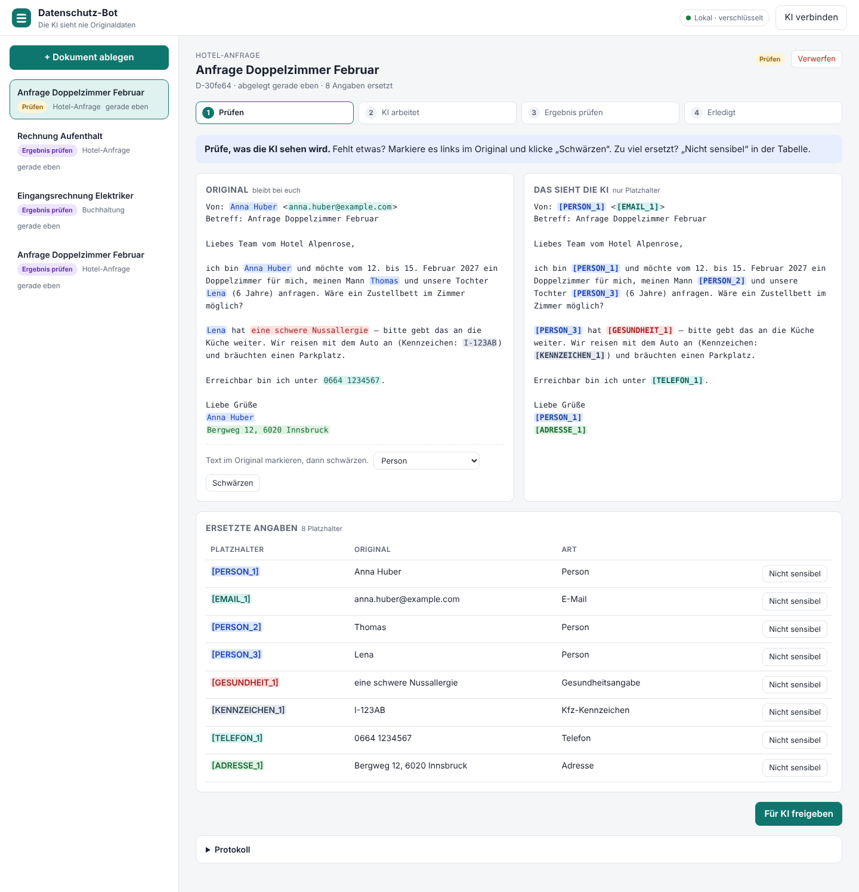
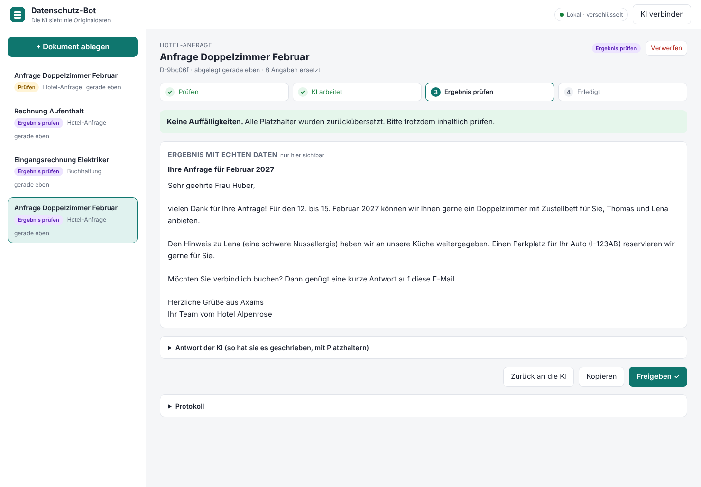
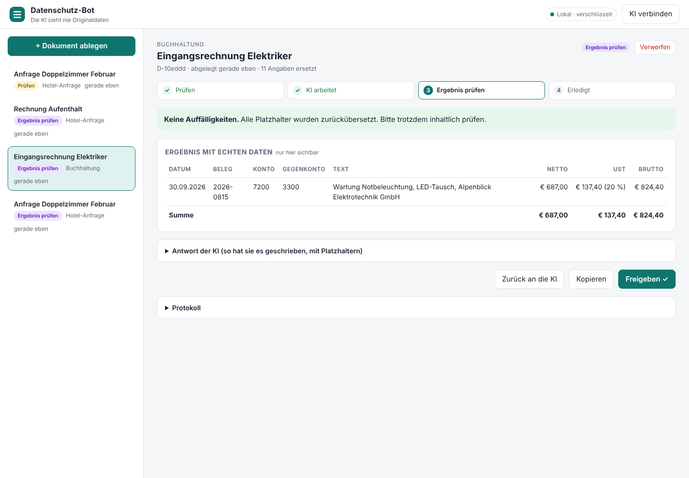
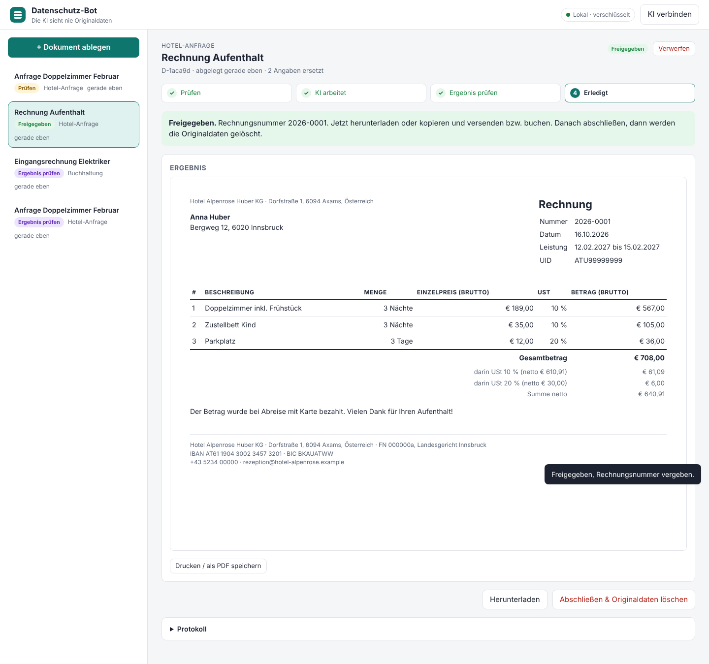

Der Prototyp funktioniert von Anfang bis Ende. Mitarbeiter legen ein Dokument ab, der Bot ersetzt alle persönlichen Angaben durch Platzhalter, die KI (Claude oder Codex) arbeitet nur mit diesen Platzhaltern, und der Bot setzt danach die echten Daten wieder ein. Kein einziger Originalwert hat in den Tests den Bot verlassen.
Offen bis zum Pilot: Erkennung messen, Reviews von Codex und Gemini, Peters Go.
| Baustein | Inhalt |
|---|---|
| Erkennung | Personen, Firmen, E-Mail, Telefon, IBAN (Prüfziffer), Kreditkarte (Luhn), UID, Steuernummer, Adressen, Kennnummern, Gesundheit und Religion; Deutsch, Englisch, Italienisch, Niederländisch |
| Rückübersetzung | Anrede-Regel („Frau Huber“), Meldung unbekannter Platzhalter und von der KI erfundener Kontaktdaten |
| Ablage | AES-256-GCM-verschlüsselt, Statusablauf, Protokoll ohne Inhalte, Löschen beim Abschluss |
| MCP-Server | auflisten, lesen, Text speichern, Buchungen vorschlagen, Rechnung erstellen |
| Rechnen | USt je Steuersatz, Brutto- und Nettorechnung, Gegenprobe zum Beleg, Rechnungsnummer erst bei Freigabe |
| Oberfläche | nur localhost, Host- und Origin-Prüfung, Content-Security-Policy, Handyansicht |
| Projektordner | AGENTS.md, CLAUDE.md, Auftrag, Architektur mit 5 Entscheidungen, Datenschutzkonzept, DSFA-Entwurf, AVV-Checkliste, Testkonzept, Reviews, Nachweise, Roadmap |




| Reviewer | Stand | Ergebnis |
|---|---|---|
| Claude (unabhängiger Prüf-Agent) | läuft | Bericht folgt in docs/04-reviews/ |
| Codex | offen | Ablauf mit offiziellem Plugin in docs/04-reviews/README.md |
| Gemini | offen | gleicher Prüfauftrag |
| Punkt | Gegenmaßnahme |
|---|---|
| Regelbasierte Erkennung kann Namen ohne Anrede übersehen | Prüfschritt vor Freigabe; Messung mit Testset; lokales Modell als zweite Stufe |
| Nur Text, kein PDF und keine Scans | Text-Extraktion und OCR im Pilot |
| Kein Login, Einzelplatz, Schlüssel neben den Daten | Login, Rollen, KMS vor Serverbetrieb |
| Rechtliche Einordnung (Pseudonymisierung) | Datenschutzkonzept und DSFA mit Jurist finalisieren |
| Schritt | Aufwand |
|---|---|
| Erkennung messen: Testset mit Lösungsblatt | 2–3 Tage |
| Reviews von Codex und Gemini, Befunde einarbeiten | 1–2 Tage |
| Lokales Modell als zweite Erkennungsstufe | 1–2 Wochen |
| PDF und Scans; Login, Rollen, EU-Hosting | 2–4 Wochen |
| Test vor Ort bei einem Pilotkunden | 1–2 Tage |
Etwa 4–7 Wochen bis zum Pilot, ohne Anbindungen an BMD, RZL, DATEV oder Hotelsoftware.
| Prüfung | Status |
|---|---|
| Auftrag und Abnahmekriterien | erfüllt |
| Architektur und Entscheidungen | erfüllt |
| Datenschutzkonzept und DSFA-Entwurf | erfüllt (Entwurf) |
| Tests und Datenschutz-Probe, Nachweis | erfüllt |
| Erkennung gemessen | offen |
| Triple-Review mit Mindestnoten | offen |
| Go von Peter | offen |